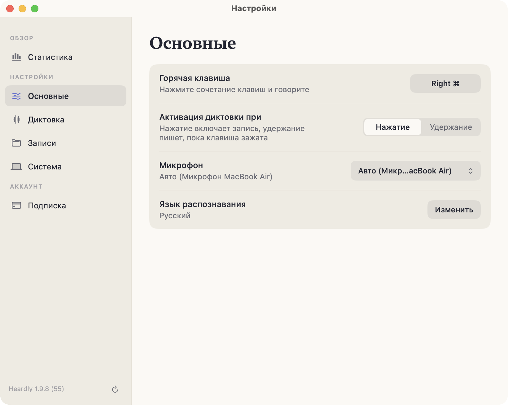
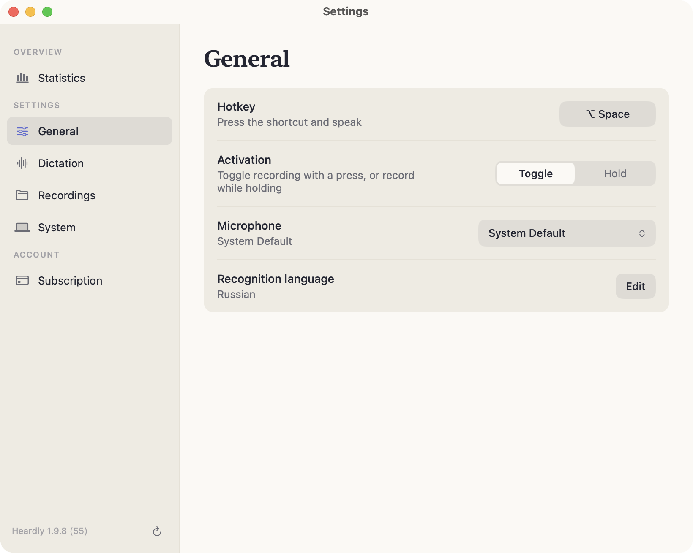

Как диктоватьHow to dictate
Диктовка работает в любом приложении, где есть текстовое поле. Heardly вставляет готовый текст туда, где стоит курсор, и не трогает то, что уже написано.Dictation works in any app with a text field. Heardly inserts the finished text where your cursor is and leaves what you already wrote alone.
Горячая клавишаThe shortcut
По умолчанию это правый ⌘ — клавиша, которая в большинстве раскладок ничем не занята. Сменить её можно в Настройках → Основные: нажмите на поле с сочетанием и наберите своё.
Подойдёт как одиночный модификатор (правый ⌥, правый ⌃), так и сочетание вроде ⌥ + Space.
The default is the right ⌘ — a key most layouts leave unused. You can change it in Settings → General: click the shortcut field and press the keys you want.
A lone modifier works (right ⌥, right ⌃), and so does a combination such as ⌥ + Space.
Нажатие или удержаниеToggle or hold
| НажатиеToggle | Одно нажатие включает запись, второе выключает. Удобно для длинных мыслей: руки свободны.One press starts recording, another stops it. Good for longer thoughts — your hands stay free. |
| УдержаниеHold | Запись идёт, пока клавиша зажата. Удобно для коротких реплик: отпустил — и текст уже на месте.Recording runs while the key is held. Good for short remarks — let go and the text is already there. |
Режим переключается в Настройках → Основные, строка «Активация диктовки при».
You switch modes in Settings → General, the “Activation” row.


Куда попадает текстWhere the text goes
Heardly вставляет текст в активное поле там, где стоит курсор. Чтобы вставка выглядела как продолжение фразы, а не как кусок из другого письма, приложение смотрит на последние символы перед курсором.
- Если перед курсором конец предложения, новая фраза начнётся с заглавной буквы.
- Если вы остановились посреди фразы, текст продолжится со строчной.
- Если в поле что-то выделено, продиктованное заменит выделенное — так удобно переписывать абзац голосом.
Для вставки используется буфер обмена, но прежнее содержимое буфера Heardly возвращает сразу после вставки — скопированная ссылка или пароль никуда не денутся.
Heardly inserts the text into the active field at the cursor. So the insert reads as a continuation rather than a fragment from somewhere else, the app looks at the characters just before the cursor.
- If a sentence ended right before the cursor, the new one starts with a capital letter.
- If you stopped mid-sentence, the text continues in lower case.
- If something is selected in the field, the dictated text replaces it — a convenient way to rewrite a paragraph by voice.
The insert goes through the clipboard, but Heardly puts the previous contents straight back — a link or a password you had copied is not lost.
ОтменаCancelling
esc прерывает диктовку в любой момент: панель закрывается, в поле ничего не вставляется. Сама расшифровка при этом сохраняется в Историю — если передумаете, текст можно забрать оттуда.
esc stops dictation at any point: the bar closes and nothing is inserted. The transcript is still saved to History, so you can pick the text up there if you change your mind.
Как получить текст поточнееGetting a cleaner result
- Говорите обычным темпом. Диктовка по слогам распознаётся хуже, а не лучше.
- Знаки препинания проговаривать не нужно — модель расставляет их сама.
- Имена, названия продуктов и профессиональные сокращения занесите в словарь замен, иначе они будут всплывать в разных написаниях.
- Если вокруг шумно или играет музыка, включите выключение звука других приложений.
- Speak at your normal pace. Over-articulating makes recognition worse, not better.
- Don’t say the punctuation out loud — the model places it for you.
- Put names, product names and trade abbreviations into the replacement list, or they will keep coming back spelled differently.
- If the room is noisy or music is playing, turn on silencing other apps.